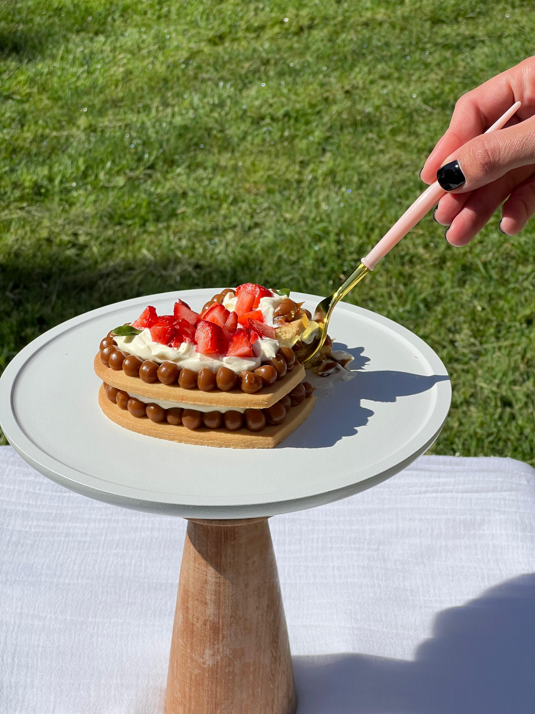

Nosotros
En Jota Budín creemos que lo dulce tiene magia: un budín no es solo un postre, es un momento para compartir, recordar y disfrutar. Nacimos en Tres Arroyos con la pasión por la repostería artesanal, y lo que empezó en la cocina se convirtió en un emprendimiento que hoy acompaña celebraciones y pequeños grandes momentos.
Qué hacemos
Elaboramos budines y productos dulces con dedicación, cuidando cada detalle desde la selección de ingredientes hasta la presentación final. Recibimos pedidos con 24 horas de anticipación y armamos boxes y sets especiales para regalos, eventos y fechas destacadas.
Nuestro enfoque
- Artesanal & con cariño: cada budín se prepara como si fuera para nuestra propia mesa.
- Personalización: sabores, tamaños y presentaciones adaptadas a tu pedido.
- Conexión local: participamos en ferias y mercados para estar cerca de nuestra comunidad.
- Compartir conocimiento: publicamos recetas y tips para inspirar a otros emprendedores.
Nuestro compromiso
Queremos que cada mordisco despierte sonrisas y genere recuerdos. En Jota Budín no solo vendemos postres: ofrecemos dulzura con propósito.
¿Querés un pedido personalizado o un box para regalar? Contactanos o escribinos por WhatsApp.